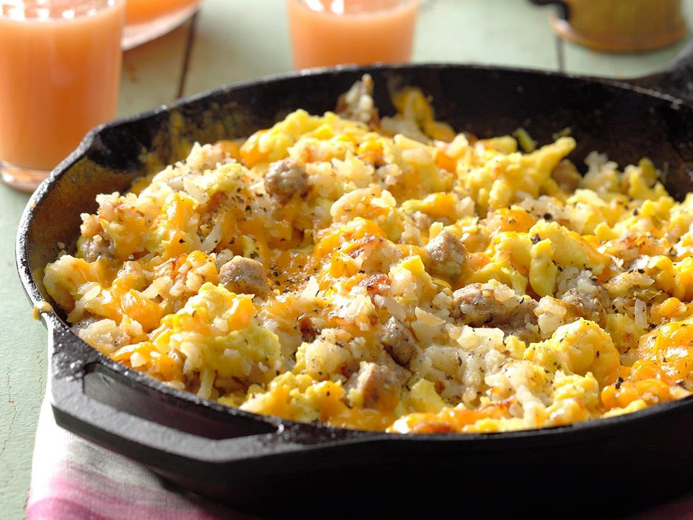

The breakfast scramble is a simple recipe that can serve you well on a chill weekend morning or a cozy campfire evening.
While the recipe is simple it takes time to make it just right for the hungry and expecting mouths you will have mid-cooking.
This recipe is also a great refrigerator cleaner and various veggies and scraps can be added as desired.
- 3-4 Gold potatoes
- 1/2 Chopped yellow onion
- 1 tbsp Rosemary
- 1 tsp Thyme
- Salt and pepper
- 6-8 Eggs
- 1 tbsp Butter
- 6 slices of chedder cheese
- Breakfast meats
- 8-10 slices of cooked bacon
- 0.5 lb Pre-cooked turkey or italian sausage
- Start by heating a pan on medium-high heat and coat the pan with the butter.
-
Chop the potatoes and then add them to the pan once the butter is melted. Add rosemary, thyme, salt, and pepper
then cover the pan with a lid. Potatoes should cook for 15 minutes and then you should lower the heat to medium. Check
potatoes for browning and flip if ready. At this point, if you need to cook then meat then get that start as well in
a separate pan.
-
Chop your onion and add it to the pan. Cover again with lid for an additional 10 minutes. Then remove the lid
and mix contents. Add additional salt or pepper as needed.
-
Remove lid and add chopped meat. Stir and mix pan contents to prevent burning. Crack eggs over the mix when meat is heated
and stir contents to mix in eggs. Add the slices of cheddar cheese and cover with pan for a few minutes.
-
Remove the lid and season with additional salt and pepper, then serve hot
from the pan to your hungry friends or self.